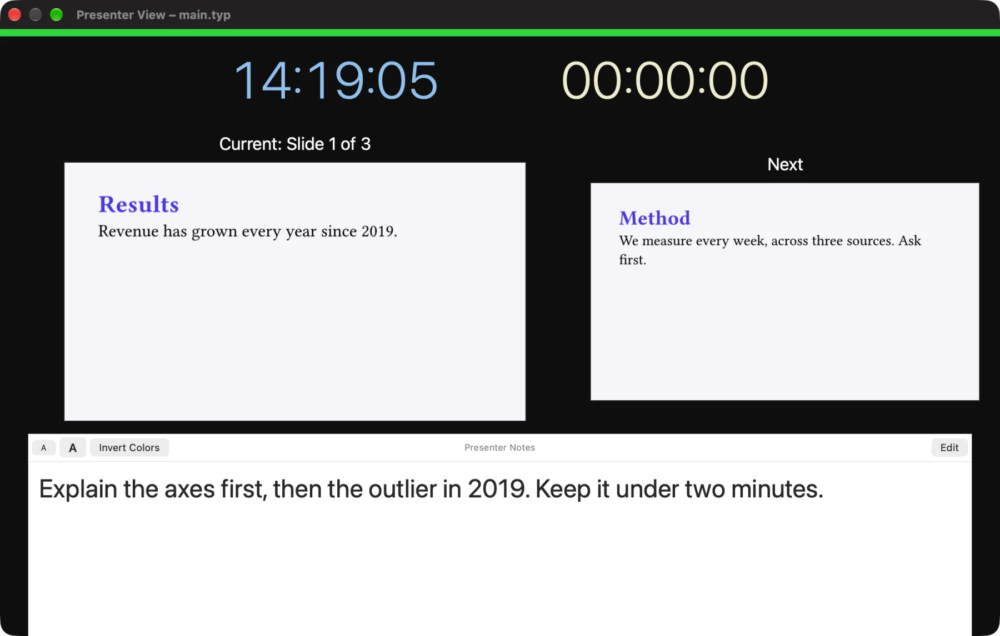
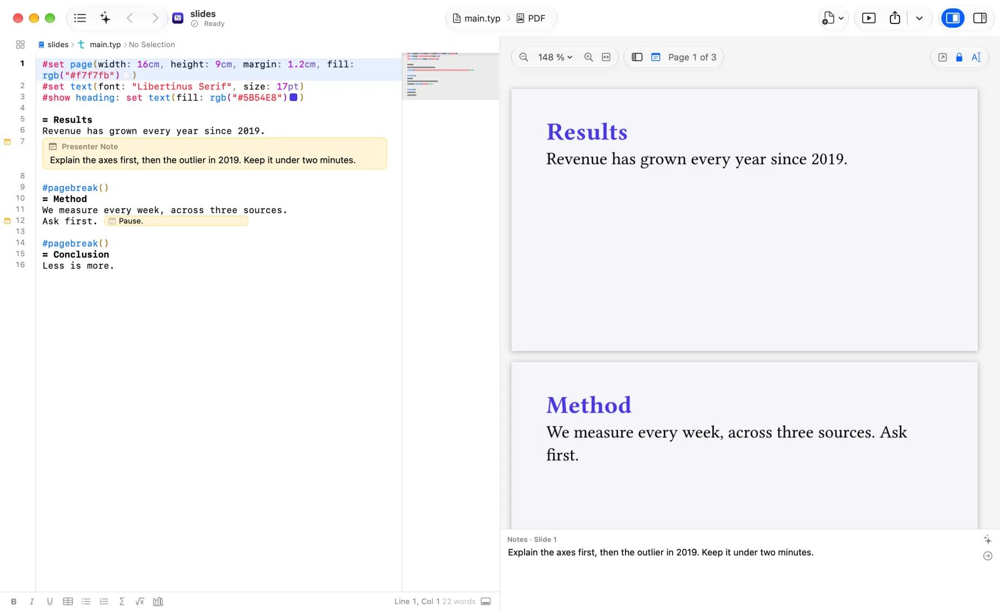
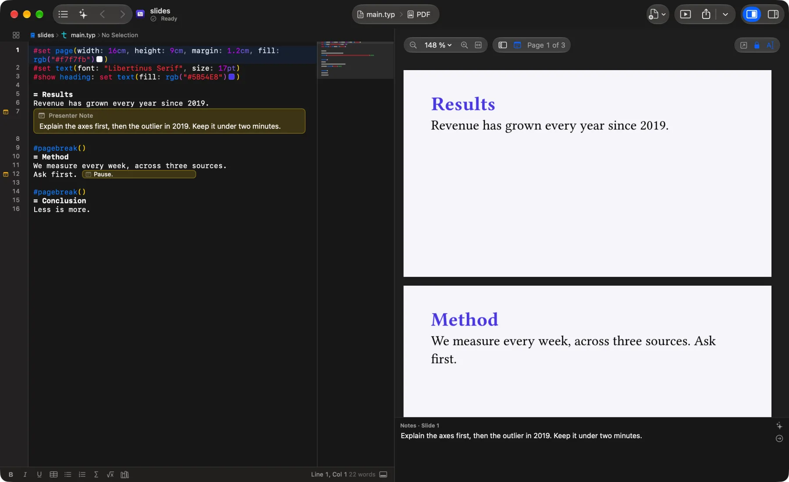
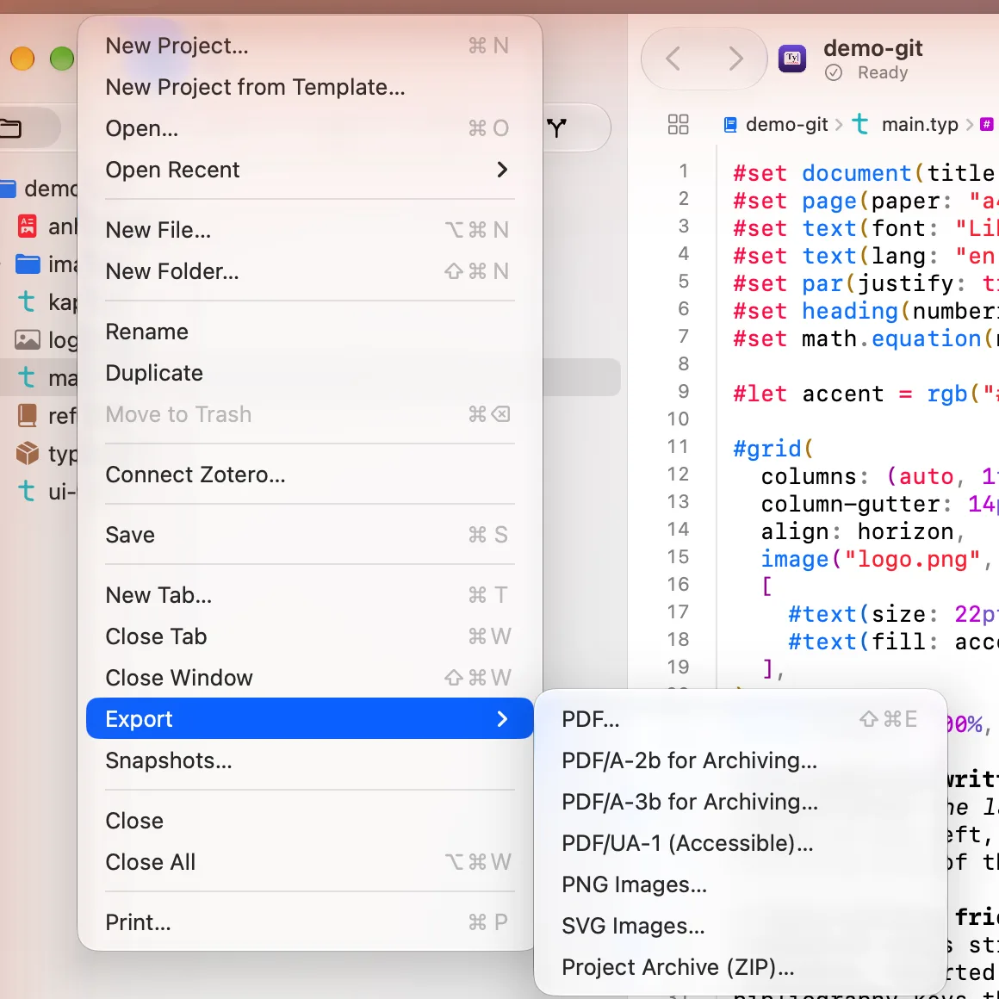

Preview and export
This page covers the preview, presentations, the export formats and printing.
Preview controls
The View menu has the preview commands.
- View › Zoom In (⌘+) and View › Zoom Out (⌘-).
- View › Fit Width (⌘0), View › Fit Page (⌘9) and View › Two Pages (⌘8).
- View › Page Thumbnails shows a strip of small pages beside the preview.
- View › Dark Preview Pages darkens the pages on screen only. Exports keep their colours.
- View › Preview Follows Cursor scrolls the preview to the caret as you move it.
- View › Lock Preview Document keeps previewing the main document instead of the file you are editing.
To find the source of something you see in the preview, click it. The editor jumps to the line that made it.


Presentation mode
View › Start Presentation (⌥⌘Return), or the Play button in the toolbar, shows the pages full screen, one at a time. With a second display, such as an iPad with Sidecar, the slides go to that display and the presenter view opens on the display of your project window, as in Keynote. With one display, the slides fill it. View › Start Presentation with Presenter View (⌥⇧⌘Return) also opens the presenter view on a single display, so you can rehearse.

The presenter view works like Keynote’s presenter display:
- The bar at the top is green when the next slide is ready, and red while it is still being drawn.
- The clock shows the time of day. The timer shows the elapsed or the remaining time. Click it to pause and resume it.
- The notes panel shows the notes of the current slide. Change their size with the A buttons, swap black and white with Invert Colors, and choose Edit to jump to the note in the source.
- Move the pointer to show the controls: Show Navigator for a strip of all slides, and on the right the keyboard shortcuts, the layout, Swap Displays and Close.
- The layout button turns the current slide, the next slide, the notes, the ready indicator, the clock and the timer on and off. For the remaining time, enter the length of your talk.
- Closing the presenter view ends the presentation.
| Key | Action |
|---|---|
| → ↓ Space | Next slide |
| ← ↑ | Previous slide |
| Home End | First or last slide |
| Number, then Return | Go to that slide |
| B W | Black or white screen for the audience |
| X | Swap displays |
| + − | Bigger or smaller notes |
| U D | Scroll the notes up or down |
| R | Reset the timer |
| ? | Show the keyboard shortcuts |
| Esc | End the presentation |
Presenter notes


Typo stores a note in the source as #metadata("…") <note>. It never appears in the PDF and needs no package. Notes from Touying (#speaker-note[…]) and Polylux (#pdfpc.speaker-note(…)) work too.
- To add a note, choose Format › Add Presenter Note (⌥⌘P) or the item at the top of the editor’s context menu. A note card opens below the line, ready to type in.
- A note on a line of its own shows as a card. A note that shares its line with other text shows as a small yellow note; click it to edit it.
- The note mark left of the line number switches a note between the card and its code.
- View › Presenter Notes in Editor chooses Cards, Compact (one line per note) or Hidden. Hidden notes keep their mark in the gutter.
- The notes strip under the preview shows the notes of the visible slide, from every file of the project. It is the preview’s half of the bottom area: the button at the bottom right of the preview, the editor’s bottom area button and View › Show Notes Strip show and hide both halves together, so they stay level.
- The AI button in the notes strip drafts a note for the visible slide. You choose whether to use it.
Export formats
All export commands are in the File › Export menu and on the Export button in the toolbar, whose arrow also offers Share PDF.
Every export command opens the export dialog with its format chosen. You can change the format there, choose the resolution of PNG images, and choose the pages like in the print dialog: all pages, a range, or the pages you tick in the sidebar. An accessible PDF/UA-1 is always exported whole, because Typst tags only complete documents. Settings › General › Preview and PDF can also save the PDF next to the document every time you save.
| Command | Result |
|---|---|
| File › Export › PDF… (⇧⌘E) | A PDF file. |
| File › Export › PDF/A-2b for Archiving… | A PDF/A-2b file, a standard for long-term archiving. |
| File › Export › PDF/A-3b for Archiving… | A PDF/A-3b file, an archiving standard that allows embedded files. |
| File › Export › PDF/UA-1 (Accessible)… | An accessible PDF/UA-1 file. |
| File › Export › PNG Images… | Every page as a PNG image. |
| File › Export › SVG Images… | Every page as an SVG image. |
| File › Export › Project Archive (ZIP)… | The project folder as a ZIP file, without hidden files such as .git. |
For PDF/UA-1, Typo can check accessibility while you write: in Settings › General, set Accessibility checks to When Exporting PDF/UA or Always. It then hints at missing alternative text, skipped heading levels, tables without a header, and a missing title or language. If a PDF/UA-1 export fails, see Troubleshooting.


Printing
Choose File › Print… (⌘P). Typo prepares the pages and opens the macOS print panel. You can save as PDF from that panel.
Missing fonts
If the document names a font that is not installed, Typst uses a replacement. Before you export or print, Typo lists the missing fonts and asks whether to continue (Export Anyway or Print Anyway). To fix the cause, put the caret on the font name, choose Navigate › Show Quick Fixes (⌘.) and pick one of the installed fonts Typo suggests. Or install the font and export again.